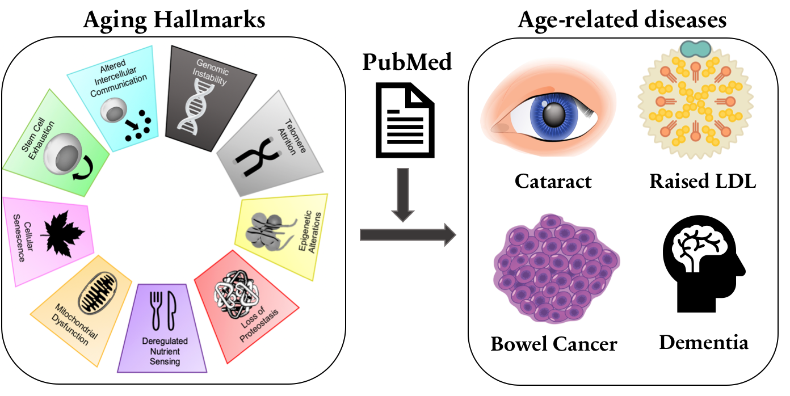

Linking Aging Hallmarks to Age-Related Diseases using the Biomedical Literature

Figure 1. Linking aging hallmarks to age-related diseases using supervised machine learning and manual curation.
Features:
We use manual curation to confirm aging hallmark-age-related disease (ARD) associations.
We use supervised machine learning to identify sentences in literature that report an aging hallmark (AH) contributes to the development or disordered physiology of a disease.
To learn more about aging hallmark-ARD associations and our site, click below.